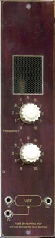
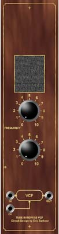

|

 for music synthesizers. This module is one of Eric Barbour's designs, based on an EF86 tube. The article and circuit diagram are presented here. Unfortunately, the photo to the right doesn't do the module justice. The knobs are vintage. I'm not sure what they came from, but I've had them near on 25 years, and they were old when I got them. They may have been from an old valve/tube radio. The woodgrain effect was generated in Photoshop. I was trying to recreate some of the feel of old valve/tube amplifiers and preamps. The tube can be seen though the screen above the knobs, though unfortunately as the EF86 is a shielded tube, no glow is visible. This module was a lot of fun to build, with the majority of components mounted on tag strip or the tube socket. Special thanks to Eric for his help with this.
Article, art & page design copyright 1998 by Ken Stone
|